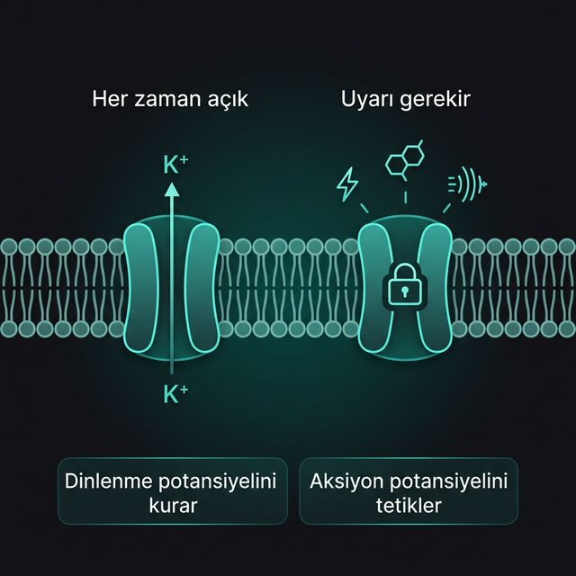

İyon kanalları zarın lipit çift tabakasına gömülü protein yapılardır. İyonların geçip geçemeyeceğini ve ne zaman geçeceğini belirleyen iki temel davranış biçimi vardır: her zaman açık olanlar ve uyarı bekleyenler.
Sızıntı kanalları sürekli açıktır. K⁺ sızıntı kanalları en önemlisidir. 1. bölümde anlattığımız -70 mV dengesi, K⁺'ın bu kanallardan dışarı sızması sayesinde oluşur. Onlar zemini hazırlar.
Dinlenme halinde kapalıdırlar. Üç farklı "kilit" mekanizması vardır: Voltaj (AP motoru), Ligand (Sinaptik iletim) ve Mekanik (Dokunma/Ses algısı). Sinyal üretmek için anahtarı beklerler.
Sızıntı kanalları dinlenme potansiyelini kurar; kapılı kanallar ise bu potansiyeli değiştirir. Biri temel zemini sağlar, diğeri bu zemin üzerine sinyal yazar.
Sızıntı kanalı her zaman yarı açık bir kapı gibidir. Kapılı kanal ise kilitli — doğru anahtar gelince açılır, o ana kadar bekler.
